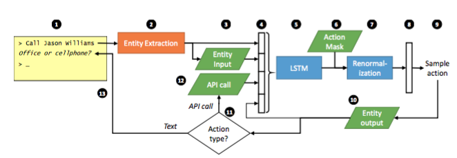

End-to-end LSTM-based dialog control optimized with supervised and reinforcement learning #PaperWeekly#
本文介绍的paper一个实用性非常强的解决方案，作者来自于微软研究院，毕业于剑桥大学Spoken Dialogue Group，研究bot很多很多年了。paper的题目是End-to-end LSTM-based dialog control optimized with supervised and reinforcement learning，最早发表于今年的6月3日。
文章的开头很有意思，先是从一个大家熟知的场景开始介绍，一个经验丰富的客服是如何带一个新入职的客服。四个阶段：
1、告诉新客服哪些”controls”是可用的，比如：如何查找客户的信息，如何确定客户身份等等。
2、新客服从老客服做出的good examples中模仿学习。
3、新客服开始试着服务客户，老客服及时纠正他的错误。
4、老客服放手不管，新客服独自服务客户，不断学习，不断积累经验。
本文的框架就是依照上面的过程进行设计的：
1、开发者提供一系列备选的actions，包括response模板和一些API函数，用来被bot调用。
2、由专家提供一系列example dialogues，用RNN来学习。
3、用一个模拟user随机产生query，bot进行response，专家进行纠正。
4、bot上线服务，与真实客户进行对话，通过反馈来提高bot服务质量。

一个完整的工作流程由上图描述:

本文在训练的时候是用一部分高质量的数据进行监督学习SL，用增强学习RL来优化模型，得到质量更高的结果。并且文中以打电话给指定联系人为应用场景，举了一个实际的例子，来帮助理解本文的思路。
一般来说，很多文章提到end-to-end的模型，都是基于大量训练数据用seq2seq来做response的生成，本文并不是这样，本文的神经网络模型是用来训练action selection的，包括后面用RL policy gradient来提升效果也都是为了选择action。虽然本文不是一个纯粹的end-to-end解决方案，但确实一个非常实用的解决方案，尤其是对于task-oriented bot的业务来说，这样的解决方案更加高效，值得复现，值得在一些细节的地方进行改善，从而真正地减少人工features和人工成本。